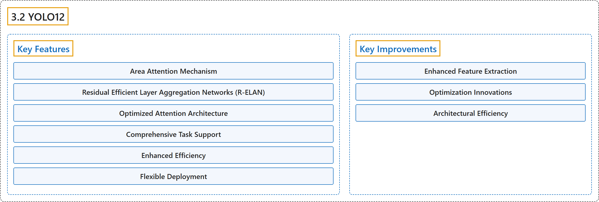

3.2 YOLO12
Classification

Glossary
| Term | Definition | 中文翻译 | Source |
|---|---|---|---|
| 3.2 YOLO12 YOLO12 |
"YOLO12, released in early 2025, introduces an attention-centric architecture that departs from the traditional CNN-based approaches used in previous YOLO models, yet retains the real-time inference speed essential for many applications." | YOLO12 于 2025 年初发布，引入了以注意力为中心的架构，不同于以往 YOLO 模型使用的传统 CNN 方法，同时保留了许多应用所需的实时推理速度。 | Ultralytics, n.d., "YOLO12: Attention-Centric Object Detection", para. 1 |
| Key Features 主要特性 |
(No definition) | （无定义） | Ultralytics, n.d., "Key Features" |
| Area Attention Mechanism 区域注意力机制 |
"Area Attention Mechanism: A new self-attention approach that processes large receptive fields efficiently." | 区域注意力机制是一种高效处理大感受野的新型自注意力方法。 | Ultralytics, n.d., "Key Features", item 1 |
| Residual Efficient Layer Aggregation Networks (R-ELAN) 残差高效层聚合网络（R-ELAN） |
"Residual Efficient Layer Aggregation Networks (R-ELAN): An improved feature aggregation module based on ELAN, designed to address optimization challenges, especially in larger-scale attention-centric models." | 残差高效层聚合网络（R-ELAN）是一种基于 ELAN 的改进特征聚合模块，用于解决优化难题，尤其是在更大规模、以注意力为中心的模型中。 | Ultralytics, n.d., "Key Features", item 2 |
| Optimized Attention Architecture 优化的注意力架构 |
"Optimized Attention Architecture: YOLO12 streamlines the standard attention mechanism for greater efficiency and compatibility with the YOLO framework." | 优化的注意力架构：YOLO12 精简了标准注意力机制，使其更高效，并与 YOLO 框架更兼容。 | Ultralytics, n.d., "Key Features", item 3 |
| Comprehensive Task Support 全面的任务支持 |
"Comprehensive Task Support: YOLO12 supports a range of core computer vision tasks: object detection, instance segmentation, image classification, pose estimation, and oriented object detection (OBB)." | 全面的任务支持：YOLO12 支持一系列核心计算机视觉任务：目标检测、实例分割、图像分类、姿态估计和旋转目标检测（OBB）。 | Ultralytics, n.d., "Key Features", item 4 |
| Enhanced Efficiency 效率提升 |
"Enhanced Efficiency: Achieves higher accuracy with fewer parameters compared to many prior models, demonstrating an improved balance between speed and accuracy." | 效率提升体现在与许多先前的模型相比，用更少的参数达到更高的精度，体现出速度与精度之间更好的平衡。 | Ultralytics, n.d., "Key Features", item 5 |
| Flexible Deployment 灵活部署 |
"Flexible Deployment: Designed for deployment across diverse platforms, from edge devices to cloud infrastructure." | 灵活部署指为在从边缘设备到云基础设施的各种平台上部署而设计。 | Ultralytics, n.d., "Key Features", item 6 |
| Key Improvements 主要改进 |
(No definition) | （无定义） | Ultralytics, n.d., "Key Improvements" |
| Enhanced Feature Extraction 增强的特征提取 |
(No definition) | （无定义） | Ultralytics, n.d., "Key Improvements" |
| Area Attention 区域注意力 |
"Area Attention: Efficiently handles large receptive fields, reducing computational cost." | 区域注意力高效处理大感受野，降低计算成本。 | Ultralytics, n.d., "Key Improvements", Enhanced Feature Extraction, item 1 |
| Optimized Balance 优化的平衡 |
"Optimized Balance: Improved balance between attention and feed-forward network computations." | 优化的平衡指改进了注意力计算与前馈网络计算之间的平衡。 | Ultralytics, n.d., "Key Improvements", Enhanced Feature Extraction, item 2 |
| R-ELAN R-ELAN |
"R-ELAN: Enhances feature aggregation using the R-ELAN architecture." | R-ELAN 使用 R-ELAN 架构增强特征聚合。 | Ultralytics, n.d., "Key Improvements", Enhanced Feature Extraction, item 3 |
| Optimization Innovations 优化创新 |
(No definition) | （无定义） | Ultralytics, n.d., "Key Improvements" |
| Residual Connections 残差连接 |
"Residual Connections: Introduces residual connections with scaling to stabilize training, especially in larger models." | 残差连接指引入带缩放的残差连接来稳定训练，在较大的模型中尤其如此。 | Ultralytics, n.d., "Key Improvements", Optimization Innovations, item 1 |
| Refined Feature Integration 改进的特征整合 |
"Refined Feature Integration: Implements an improved method for feature integration within R-ELAN." | 改进的特征整合指在 R-ELAN 中实现一种改进的特征整合方法。 | Ultralytics, n.d., "Key Improvements", Optimization Innovations, item 2 |
| FlashAttention FlashAttention |
"FlashAttention: Incorporates FlashAttention to reduce memory access overhead." | FlashAttention 引入 FlashAttention 以减少内存访问开销。 | Ultralytics, n.d., "Key Improvements", Optimization Innovations, item 3 |
| Architectural Efficiency 架构效率 |
(No definition) | （无定义） | Ultralytics, n.d., "Key Improvements" |
| Reduced Parameters 更少的参数 |
"Reduced Parameters: Achieves a lower parameter count while maintaining or improving accuracy compared to many previous models." | 更少的参数：与许多先前的模型相比，它在保持或提高精度的同时参数量更少。 | Ultralytics, n.d., "Key Improvements", Architectural Efficiency, item 1 |
| Streamlined Attention 精简的注意力 |
"Streamlined Attention: Uses a simplified attention implementation, avoiding positional encoding." | 精简的注意力指使用简化的注意力实现，不用位置编码。 | Ultralytics, n.d., "Key Improvements", Architectural Efficiency, item 2 |
| Optimized MLP Ratios 优化的 MLP 比率 |
"Optimized MLP Ratios: Adjusts MLP ratios to more effectively allocate computational resources." | 优化的 MLP 比率指调整 MLP 比率，以更有效地分配计算资源。 | Ultralytics, n.d., "Key Improvements", Architectural Efficiency, item 3 |
References
Ultralytics. (n.d.). YOLO12: Attention-Centric Object Detection. Ultralytics YOLO Docs (ultralytics 8.4.194). Retrieved October 31, 2026, from https://docs.ultralytics.com/models/yolo12/